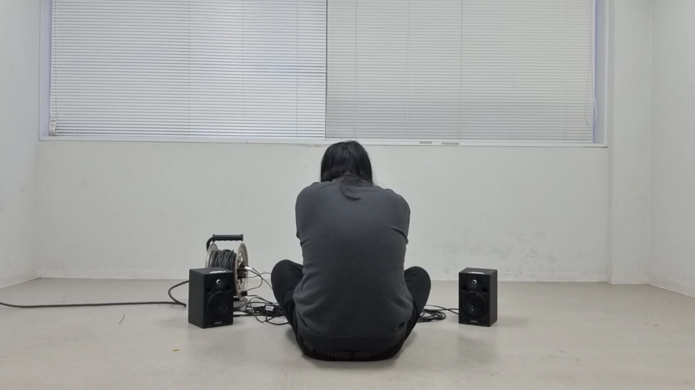

State No. 6
状態 No. 6 (2024)
Play several different background musics (BGMs) in the same space.
複数の異なる BGM を同一空間で再生する
[SCORE]

performed by Hyun-Mook Lim, 2024
[VIDEO]
premiered by Yaeichi: Shina Takamatsu, Reiko Hashimoto, Atsuko Mashino, Sumire Mori, Akiko Yamane
15 June 2024 at +1art, Osaka
back to State